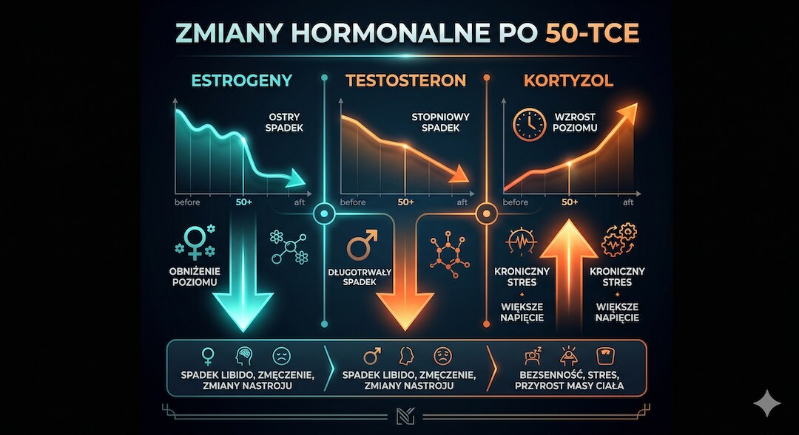
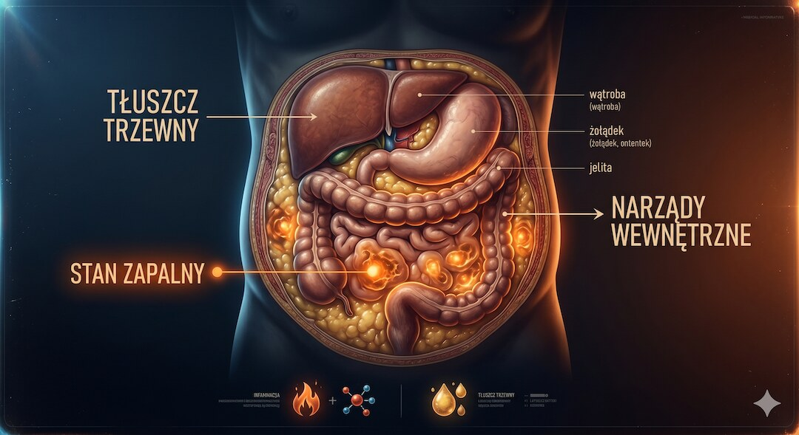
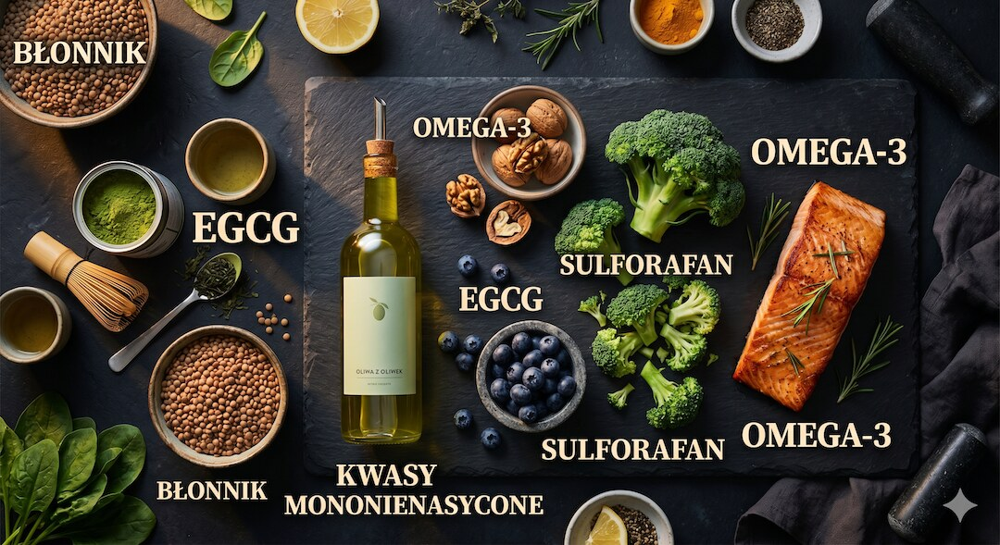
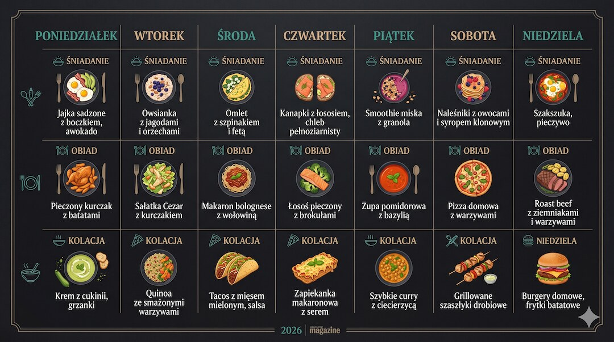
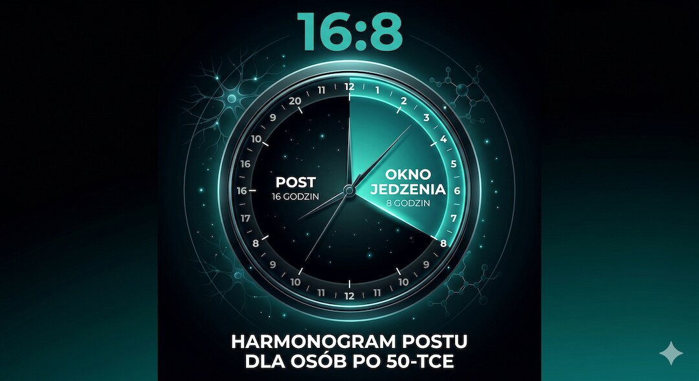

Oponka brzuszna po 50-tce to nie tylko kwestia wyglądu. Często oznacza większy udział tłuszczu trzewnego, wyższy stan zapalny, gorszą wrażliwość na insulinę i przewlekły stres. Ten poradnik pokazuje, jak uporządkować dietę, sen, nawodnienie i rytm jedzenia, żeby działać spokojnie, bez głodówek i bez skrajności.
Szybka odpowiedź
Aby pozbyć się oponki brzusznej po 50-tce, należy zmniejszyć spożycie cukrów prostych i wdrożyć dietę o niskim ładunku glikemicznym, ponieważ u osób po 50 roku życia obniżenie poziomu insuliny oraz redukcja stanu zapalnego za pomocą kwasów omega-3 i postu przerywanego w modelu 16:8 bezpośrednio przyspieszają spalanie groźnego tłuszczu trzewnego już po 4 tygodniach.
Kluczowe wnioski
- Tłuszcz trzewny jest metabolicznie aktywny i wydziela cytokiny, wywołując przewlekły stan zapalny.
- Dojrzały organizm magazynuje więcej tłuszczu brzusznego z powodu spadku estrogenu, testosteronu i wzrostu kortyzolu.
- Tłuste ryby bogate w omega-3, warzywa krzyżowe i zielona herbata to kluczowe produkty celowane w redukcję oponki.
- Model intermittent fasting 16:8 obniża insulinę na czczo i redukuje tłuszcz trzewny skuteczniej niż samo obcięcie kalorii.
Dlaczego po 50-tce tłuszcz wędruje na brzuch?
Po pięćdziesiątce organizm przechodzi zmiany hormonalne, które dosłownie przestawiają to, gdzie gromadzi zapasy energii. U kobiet spada poziom estrogenów, u mężczyzn – testosteronu. Oba hormony dotychczas pomagały trzymać tłuszcz z dala od jamy brzusznej. Gdy ich brakuje, tkanka tłuszczowa zaczyna preferować właśnie ten rejon.
Równolegle rośnie poziom kortyzolu – hormonu stresu. Kortyzol aktywnie pobudza adipocyty (komórki tłuszczowe) w okolicach brzucha do magazynowania energii. Im wyższy przewlekły stres, tym szybciej rośnie oponka. O tym, jak obniżyć kortyzol po 50 i opanować stres brzuszny, przeczytasz w naszym osobnym artykule.
Do tego dochodzi naturalna utrata mięśni (sarkopenia), która obniża podstawową przemianę materii. Ciało spala mniej kalorii w spoczynku, więc nawet przy tej samej diecie co w młodości, nadwyżka kalorii rośnie. Efekt: tłuszcz trzewny przybywa mimo pozornie rozsądnego jedzenia.

Tłuszcz trzewny a stan zapalny – dlaczego to takie groźne?
Tłuszcz trzewny to nie jest bierna rezerwa energii – to aktywna tkanka, która wydziela substancje prozapalne zwane cytokinami. Badania opublikowane w Obesity Reviews potwierdzają, że tkanka tłuszczowa brzuszna produkuje m.in. interleukinę-6 i TNF-alfa, które przewlekle uszkadzają naczynia krwionośne i zaburzają wrażliwość na insulinę.
W praktyce oznacza to, że oponka na brzuchu to nie problem estetyczny, lecz metaboliczny. Wysoki poziom tłuszczu trzewnego wiąże się z większym ryzykiem cukrzycy typu 2, nadciśnienia, chorób sercowo-naczyniowych i niektórych nowotworów. Zobacz, dlaczego tłuszcz trzewny jest tak niebezpieczny dla zdrowia.
Dobra wiadomość: tłuszcz trzewny jest bardziej wrażliwy na interwencje dietetyczne niż tłuszcz podskórny. Oznacza to, że odpowiednia dieta daje tu szybsze efekty niż przy redukcji tłuszczu z ud czy ramion. Zmiany w jadłospisie potrafią przynosić mierzalne rezultaty już po kilku tygodniach.

Jakie produkty spalają tłuszcz brzuszny? Oto konkretna lista?
Nie istnieje jeden „spalacz tłuszczu brzusznego", ale istnieją grupy produktów, które skutecznie obniżają stan zapalny, stabilizują insulinę i pomagają redukować tkankę trzewną. Warto skupić się na tych, które działają wielotorowo i są łatwe do wprowadzenia na co dzień – bez głodówek i diet-cud.
Tłuste ryby morskie (łosoś, makrela, sardynki) zawierają kwasy omega-3, które bezpośrednio hamują produkcję cytokin zapalnych. Badania z American Journal of Clinical Nutrition pokazują, że regularne spożycie omega-3 redukuje obwód talii i markery stanu zapalnego u osób z nadwagą brzuszną. Wystarczą 2–3 porcje ryb tygodniowo.
Warzywa krzyżowe (brokuły, brukselka, kapusta, kalafior) zawierają sulforafan – związek, który aktywuje enzymy detoksykacyjne i ogranicza akumulację tłuszczu trzewnego. Można je jeść codziennie, surowe lub gotowane al dente, by zachować jak najwięcej sulforafanu.
- Tłuste ryby morskie (łosoś, makrela, sardynki) – omega-3 hamują stan zapalny
- Warzywa krzyżowe (brokuły, kapusta, kalafior) – sulforafan ogranicza gromadzenie tłuszczu
- Orzechy włoskie i migdały – zdrowe tłuszcze + magnez obniżający kortyzol
- Strączki (soczewica, ciecierzyca, fasola) – błonnik stabilizuje glikemię i sytość
- Zielona herbata (matcha) – katechiny EGCG wspierają termogenezę i redukcję tłuszczu trzewnego
- Oliwa z oliwek extra virgin – oleokantalowy związek ma działanie zbliżone do ibuprofenu (przeciwzapalne)
- Jagody, borówki, maliny – antocyjany zmniejszają stres oksydacyjny i stan zapalny

Czego unikać, aby nie zwiększać tłuszczu trzewnego?
Równie ważne jak to, co jemy, jest to, czego unikamy. Kilka kategorii produktów wyjątkowo efektywnie napędza odkładanie tłuszczu trzewnego po pięćdziesiątce – szczególnie gdy wrażliwość na insulinę jest już obniżona, a kortyzol podwyższony przez stres życiowy lub słaby sen.
Cukry proste i słodzone napoje (soki owocowe z kartonu, napoje gazowane, energetyki) powodują gwałtowne skoki insuliny. Insulina to główny hormon „magazynujący" – przy jej wysokim poziomie organizm chętniej odkłada tłuszcz trzewny niż go spala. Podstawowe zasady żywienia znajdziesz w tekście o diecie po 50. roku życia.
Tłuszcze trans i utwardzone oleje roślinne (margaryny twarde, gotowe wypieki, chipsy, fast food) zaostrzają stan zapalny i zakłócają profil lipidowy. Badania wskazują, że diety bogate w tłuszcze trans korelują z wyraźnie wyższą ilością tłuszczu trzewnego – niezależnie od całkowitej kaloryczności diety.
- Słodzone napoje, soki owocowe z kartonu, energetyki
- Białe pieczywo, biały ryż, błyskawiczne płatki owsiane o wysokim IG
- Tłuszcze trans (twarda margaryna, gotowe wypieki, chipsy)
- Alkohol – szczególnie piwo i słodkie alkohole (wzmaga odkładanie tłuszczu brzusznego)
- Przetworzone mięso (parówki, kiełbasy, wędliny przemysłowe)
Jak kortyzol i stres napędzają oponkę na brzuchu?
Wiele osób po pięćdziesiątce zmienia dietę, ćwiczy regularnie, a oponka wciąż zostaje. Często winowajcą jest przewlekły stres i wynikający z niego wysoki kortyzol. To hormon, który ewolucyjnie „każe” organizmowi gromadzić energię na wypadek zagrożenia – a miejscem preferowanym przez kortyzol jest właśnie tkanka tłuszczowa brzuszna.
Zbyt mało snu (poniżej 6–7 godzin) bezpośrednio podnosi poziom kortyzolu i greliny (hormonu głodu), a obniża leptynę (hormon sytości). Efekt: więcej jemy i gorzej spalamy, szczególnie w okolicach brzucha. Badania opublikowane w Sleep wykazały, że osoby śpiące mniej niż 6 godzin mają istotnie więcej tłuszczu trzewnego niż te, które śpią 7–8 godzin.
Praktyczne podejście do kortyzolu to: regularny sen (stała godzina wstawania, zaciemniona sypialnia), techniki relaksacyjne (oddech przeponowy, spacery w naturze), a w diecie – produkty bogate w magnez (orzechy, pestki dyni, ciemna czekolada) i witaminę C (papryka, natka pietruszki), które pomagają regulować odpowiedź kortyzolową.
Przykładowy plan żywieniowy na tydzień – jak to wygląda w praktyce?
Nie trzeba rewolucji na talerzu – wystarczy kilka kluczowych zamian, które można wprowadzać stopniowo. Poniżej znajdziesz przykładowy schemat tygodnia, który łączy produkty obniżające stan zapalny, stabilizujące insulinę i dostarczające wystarczająco białka, by chronić mięśnie przy jednoczesnej redukcji tłuszczu trzewnego.
Śniadanie warto oprzeć na białku i zdrowych tłuszczach: jajka (2–3), awokado, garść warzyw – zamiast chleba z dżemem. Obiad niech zawiera porcję tłustej ryby lub strączków z warzywami krzyżowymi i oliwą. Kolacja – lekka: jogurt naturalny z orzechami i garścią jagód, lub sałatka z tuńczykiem. Przekąski: garść migdałów, warzywa surowe z hummusem.
Kluczowe zasady do zapamiętania: jedz w regularnych oknach czasowych (np. 8:00–19:00), ogranicz jedzenie wieczorne po 20:00, nawadniaj się (min. 1,5–2 l wody dziennie), a herbatę zieloną pij między posiłkami. Nie musisz liczyć kalorii – skup się na jakości produktów i regularności.

Intermittent fasting po 50-tce – czy to ma sens przy tłuszczu trzewnym?
Przerywany post (intermittent fasting, IF) zyskuje coraz więcej dowodów naukowych jako skuteczna metoda redukcji tłuszczu trzewnego – szczególnie u osób po pięćdziesiątce, gdzie wrażliwość na insulinę jest obniżona. Najpopularniejszy schemat 16:8 (16 godzin postu, 8-godzinne okno jedzenia) jest na ogół bezpieczny i wykonalny bez liczenia kalorii. Dowiedz się więcej, jak mądrze stosować post przerywany po 50 , by nie stracić masy mięśniowej.
Badania opublikowane w Cell Metabolism wykazały, że IF skuteczniej redukuje tłuszcz trzewny niż samo ograniczenie kalorii przy tej samej wartości energetycznej diety. Mechanizm to m.in. obniżenie poziomu insuliny na czczo, wzrost hormonu wzrostu i przejście metabolizmu w tryb spalania tłuszczu (ketoza łagodna).
Ważne zastrzeżenie: IF nie jest wskazany dla osób z cukrzycą insulinozależną, niskim ciśnieniem, niedowagą ani zaburzeniami odżywiania w wywiadzie. Kobiety po menopauzie powinny zaczynać od łagodniejszego schematu 12:12 lub 14:10, obserwując samopoczucie i w razie wątpliwości konsultując się z lekarzem.

Zobacz też: ai w medycynie czy naprawde pomaga pacjentom fakty badania.
Najczęściej zadawane pytania
Jak szybko można pozbyć się oponki brzusznej po 50-tce?
Przy konsekwentnych zmianach w diecie i aktywności fizycznej pierwsze zauważalne efekty (zmniejszenie obwodu talii o 2–4 cm) pojawiają się zwykle po 4–8 tygodniach. Tłuszcz trzewny reaguje szybciej na interwencje niż tłuszcz podskórny, dlatego zmiany metaboliczne (np. poprawa poziomu glukozy) widoczne są jeszcze wcześniej.
Czy tłuszcz trzewny jest groźniejszy niż tłuszcz podskórny?
Tak. Tłuszcz trzewny otacza narządy wewnętrzne i wydziela substancje prozapalne (cytokiny), które zwiększają ryzyko cukrzycy typu 2, chorób serca i nadciśnienia. Tłuszcz podskórny (pod skórą) jest metabolicznie mniej aktywny i mniej szkodliwy dla zdrowia.
Jak jedzenie pomaga spalić tłuszcz brzuszny?
Największy wpływ mają: tłuste ryby morskie (omega-3), warzywa krzyżowe (sulforafan), zielona herbata (EGCG), oliwa z oliwek extra virgin, strączki (błonnik i białko) oraz orzechy włoskie i migdały. Kluczowe jest wyeliminowanie cukrów prostych i tłuszczów trans.
Czy intermittent fasting pomaga na oponkę po 50-tce?
Badania potwierdzają, że przerywany post (np. schemat 16:8) skutecznie redukuje tłuszcz trzewny u osób po 50-tce – skuteczniej niż samo ograniczenie kalorii. Przed wprowadzeniem IF warto skonsultować się z lekarzem, szczególnie przy cukrzycy lub chorobach przewlekłych.
Jak kortyzol wpływa na oponkę brzuszną?
Kortyzol (hormon stresu) aktywnie kieruje tłuszcz do komórek tłuszczowych w okolicach brzucha. Przewlekły stres, niedobór snu i długotrwały wysiłek psychiczny podnoszą kortyzol i nasilają odkładanie tłuszczu trzewnego, nawet przy prawidłowej diecie kalorycznej.
Ile wody pić przy redukcji tłuszczu trzewnego?
Zaleca się minimum 1,5–2 litrów wody dziennie. Dobre nawodnienie wspiera metabolizm, zmniejsza retencję wody i ogranicza fałszywy głód. Zielona herbata (2–3 filiżanki dziennie) jest doskonałym uzupełnieniem dzięki zawartości katechin EGCG.
Obwód pasa, tłuszcz trzewny, kortyzol i nawyki wspierające metabolizm omawiamy szerzej w Centrum Metabolizmu i Brzucha po 50-tce.
Źródła
- Nicklas BJ et al. – Visceral adipose tissue and cardiometabolic risk (Obesity Reviews, 2023)
- Smith GI et al. – Omega-3 and visceral fat reduction (American Journal of Clinical Nutrition, 2021)
- Tahara Y et al. – Time-restricted eating and visceral fat (Cell Metabolism, 2022)
- Epel ES et al. – Stress, cortisol and abdominal fat (Psychosomatic Medicine, 2000)
- Taheri S et al. – Short sleep duration and adiposity (PLOS Medicine, 2004)
- Nagata C et al. – Green tea catechins and body fat (International Journal of Obesity, 2020)
- WHO – Waist circumference and waist-hip ratio: Report of a WHO expert consultation (2008)
Uwaga: Artykuł ma charakter informacyjny i edukacyjny. Nie zastępuje konsultacji lekarskiej, diagnozy ani leczenia.